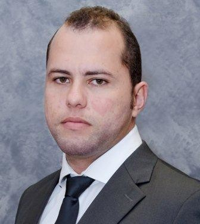

Sobre
|
Habilidades
VLADIMIR RAMBALDI CHAGAS | PORTFÓLIO WEB

Saiba Um Pouco De Mim
Sou Vladimir Chagas, 32 Anos, Marido da Tamires Pimenta e pai de 3 caninos (Toy, Mimosa e Woody)
Sou Natural de Varginha/MG mas atualmente me resido em Navegantes/SC
Sou formado em Ciência da computação com MBA em Planejamento e Gestão Estratégica
Habilidades
- Excel Avançado
- VBA
- Power BI
- Scrum
- Gestão de Pessoas
- Desenvolvimento de processos/procedimentos
- MASP
- Yellow Belt/Six Sigma
**Apresento background em TI por conta de minha formação mas minhas habilidades estão mais atreladas à Engenharia e Gestão pois fiquei 7 anos longe de TI, estando somente em Engenharia
Quer saber mais sobre mim, acesse meu LinkedIn:
LinkedIn Vladimir Chagas